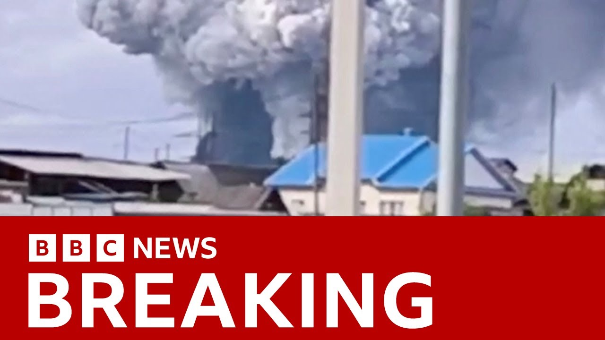

【乌克兰声称在一次针对敌方轰炸机的大规模特别行动中击中了超过40架俄罗斯轰炸机，并发布了据称显示西伯利亚一处空军基地遭无人机袭击的 footage。报道称其他飞机也在另一处基地遇袭，俄罗斯媒体承认袭击但称防空系统已启动。记者指出这是乌军迄今最大胆的行动之一，涉及多个远距离基地，可能重创俄战略航空力量。】
Summary: Now, let's turn to some breaking news in the last half hour.
摘要： 现在，让我们关注过去半小时内的突发新闻。

⏱️ Estimated Reading Time: 4 min
And Ukraine claims to have hit more than 40 Russian bombers in what the country's security service says is a large-scale special operation aimed at destroying enemy bomber aircraft.
乌克兰声称在一次旨在摧毁敌方轰炸机的大规模特别行动中击中了超过40架俄罗斯轰炸机。
Ukraine's released this footage, which it says shows a drone attack at the Blea Air Base in Siberia.
乌克兰发布了这段 footage，称其显示西伯利亚布莱亚空军基地遭无人机袭击。
Uh, and on the footage, which I I don't believe we are able to actually show you at the moment, but you can see explosions visible with smoke rising.
虽然我们目前无法展示这段 footage，但可以看到爆炸和升起的浓烟。
Reports suggest other aircraft have been attacked at the Oenia air base near Mammansk.
报道称马曼斯克附近的奥尼亚空军基地也有其他飞机遇袭。
Well, Russian media is reporting the attack in Mamman, but says air defenses are working.
俄罗斯媒体报道了马曼的袭击，但称防空系统已启动。
Well, let's go straight to our world affairs correspondent Paul Adams, who is in Kev.
现在连线我们在基辅的国际事务记者保罗·亚当斯。
Um, Paul, this is just a developing story.
保罗，这是一则正在发展的新闻。
So, just tell us what more you can add to what we've said.
请补充最新进展。
Yeah, it's certainly developing and the uh the information is coming thick and fast.
是的，信息正迅速涌现。
You know, Ukrainians have experienced uh moments of euphoria uh when their military has conducted uh successful operations against major Russian military targets in the past.
乌克兰人曾因军队成功打击俄重要军事目标而欢欣鼓舞。
One thinks about the attack on the flagship of the Black Sea fleet, the Mosfare, and the attack on the Kirch Bridge, both of those back in 2022.
例如2022年对黑海舰队旗舰"莫斯科号"和克里米亚大桥的袭击。
Already people here are beginning to wonder whether what happened this morning uh is the most audacious operation so far.
人们开始怀疑今晨的行动是否迄今最大胆。
Attacks on four separate air bases.
四个空军基地同时遇袭。
One of them that you just referred to is 4,000 kilometers from Ukraine's border.
其中一处基地距乌边境4000公里。
The other one up in the Arctic Circle uh well over a thousand kilometers.
另一处位于北极圈内，距离远超1000公里。
And if the Ukrainian officials are to be believed, a very very significant toll in terms of Russia's strategic aviation.
若乌方说法属实，俄战略航空力量遭受重创。
The pictures that we have seen, and there are a lot of them around now, show drones attacking large strategic bombers parked on the tarmac in those air bases.
流传画面显示无人机袭击了停放在基地跑道上的战略轰炸机。
Now, we can't verify at this point the extent of the damage.
目前无法核实损毁程度。
The drones involved were probably quite small ones.
涉事无人机可能体型较小。
It'll be interesting to find out how this operation was launched, judging by the size of those drones.
从无人机尺寸推断其发射方式将很有趣。
It was probably launched from inside Russia, which makes the attack even more audacious than it might be otherwise.
很可能从俄境内发射，使行动更加大胆。
Uh, but clearly this is a very significant attack on the kinds of aircraft that Russia uses day in day out to launch missiles against uh targets across the country.
这显然是对俄日常用于导弹袭击的战机的重大打击。
And by the way, last night's attack involving drones and ballistic and cruise missiles was the largest single Russian attack on Ukraine so far with more than 470 drones.
昨晚俄方动用470多架无人机和导弹发动了迄今最大规模袭击。
That's the largest single number of drones uh targeted at Ukraine in a single night.
这是单晚针对乌克兰的最大规模无人机袭击。
So, you know, as we ponder the possibility of a second round of peace talks in Istanbul tomorrow, it's hard to see how those talks can possibly yield anything of any great significance, if they happen at all.
考虑到这些，明日伊斯坦布尔的第二轮和谈恐难有实质成果。
Indeed, Paul Adams, thank you very much for that update.
感谢保罗·亚当斯的更新。
And we're just hearing on the AFP news agency that the Russian delegation is heading to Istanbul for those talks with Ukraine.
法新社援引俄媒称俄代表团已启程赴伊斯坦布尔参会。